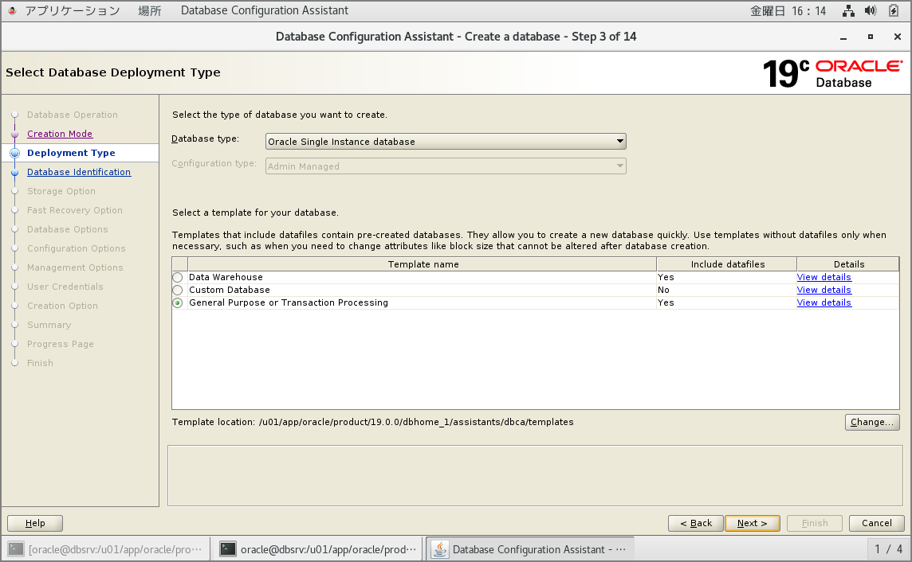

VirtualBoxのOracle LinuxにOracle Database 19cをインストール
はじめに
前回で必要パッケージやユーザ、ディレクトリの準備が完了したので実際にOracle Database 19cをインストールしてDBを構築していきます。※シングル環境です。OSはOracle Linux 7.6です。
事前準備編
Oracle Database 19cインストール事前準備 | my opinion is my own https://zatoima.github.io/oracle-pre-install-19c.html
Oracle Database 19c for Linuxのインストールガイド
Oracle Database Databaseインストレーション・ガイド, 19c for Linux https://docs.oracle.com/cd/F19136_01/ladbi/index.html
Oracle Database 19cのインストール
事前に「Oracle Software Delivery Cloud」から、「Oracle Database 19.3.0.0.0（V982063-01.zip）」をダウンロードします。
Oracle 18cからruninstallerを使用したORACLE_HOMEへのインストールではなく、unzip形式に変更になっています。
[oracle@dbsrv dbhome_1]$ pwd
/u01/app/oracle/product/19.3.0.0/dbhome_1
[oracle@dbsrv dbhome_1]$ ls -l
合計 2987996
-rw-rw-r-- 1 oracle oracle 3059705302 5月 28 11:40 V982063-01.zip
[oracle@dbsrv dbhome_1]$ unzip V982063-01.zip
Archive: V982063-01.zip
creating: drdaas/
creating: drdaas/admin/
inflating: drdaas/admin/drdasqtt_translator_setup.sql
inflating: drdaas/admin/drdapkg_db2.sql
inflating: drdaas/admin/drdaas.ora
inflating: drdaas/admin/drdasqt_set_profile_dd.sql
中略
javavm/admin/classes.bin -> ../../javavm/jdk/jdk8/admin/classes.bin
javavm/admin/libjtcjt.so -> ../../javavm/jdk/jdk8/admin/libjtcjt.so
jdk/jre/bin/ControlPanel -> jcontrol
javavm/admin/lfclasses.bin -> ../../javavm/jdk/jdk8/admin/lfclasses.bin
javavm/lib/security/cacerts -> ../../../javavm/jdk/jdk8/lib/security/cacerts
javavm/lib/sunjce_provider.jar -> ../../javavm/jdk/jdk8/lib/sunjce_provider.jar
javavm/lib/security/README.txt -> ../../../javavm/jdk/jdk8/lib/security/README.txt
javavm/lib/security/java.security -> ../../../javavm/jdk/jdk8/lib/security/java.security
jdk/jre/lib/amd64/server/libjsig.so -> ../libjsig.so
[oracle@dbsrv dbhome_1]$
不要になったzipファイルを削除します。
[oracle@dbsrv dbhome_1]$ ls -l V982063-01.zip
-rw-rw-r-- 1 oracle oracle 3059705302 5月 28 11:40 V982063-01.zip
[oracle@dbsrv dbhome_1]$ rm -f V982063-01.zip
[oracle@dbsrv dbhome_1]$
DB作成
従来どおり、DBCAを使用してDBを作成します。





DBCA実行中に前バージョンと同様にorainstRoot.shとroot.shの実行を行います。
[root@dbsrv ~]# /u01/app/oraInventory/orainstRoot.sh
Changing permissions of /u01/app/oraInventory.
Adding read,write permissions for group.
Removing read,write,execute permissions for world.
Changing groupname of /u01/app/oraInventory to oracle.
The execution of the script is complete.
[root@dbsrv ~]# /u01/app/oracle/product/19.0.0/dbhome_1/root.sh
Performing root user operation.
The following environment variables are set as:
ORACLE_OWNER= oracle
ORACLE_HOME= /u01/app/oracle/product/19.0.0/dbhome_1
Enter the full pathname of the local bin directory: [/usr/local/bin]:
Copying dbhome to /usr/local/bin ...
Copying oraenv to /usr/local/bin ...
Copying coraenv to /usr/local/bin ...
Creating /etc/oratab file...
Entries will be added to the /etc/oratab file as needed by
Database Configuration Assistant when a database is created
Finished running generic part of root script.
Now product-specific root actions will be performed.
Oracle Trace File Analyzer (TFA - Standalone Mode) is available at :
/u01/app/oracle/product/19.0.0/dbhome_1/bin/tfactl
Note :
1. tfactl will use TFA Service if that service is running and user has been granted access
2. tfactl will configure TFA Standalone Mode only if user has no access to TFA Service or TFA is not installed
[root@dbsrv ~]#
環境変数の設定
export TMPDIR=$HOME/tmp
export TEMP=$HOME/tmp
export ORACLE_BASE=/u01/app/oracle
export ORACLE_HOME=/u01/app/oracle/product/19.0.0/dbhome_1
export PATH=$ORACLE_HOME/bin:$ORACLE_HOME/jdk/bin:${PATH}
export LD_LIBRARY_PATH=$ORACLE_HOME/lib
export NLS_LANG=JAPANESE_JAPAN.UTF8
export LANG=ja_JP.UTF-8
プロセス確認
[oracle@dbsrv bin]$ ps -ef | grep db19c1
oracle 31811 1 0 16:43 ? 00:00:00 ora_pmon_db19c1
oracle 31813 1 0 16:43 ? 00:00:00 ora_clmn_db19c1
oracle 31815 1 0 16:43 ? 00:00:00 ora_psp0_db19c1
oracle 31818 1 1 16:43 ? 00:00:03 ora_vktm_db19c1
oracle 31822 1 0 16:43 ? 00:00:00 ora_gen0_db19c1
oracle 31824 1 0 16:43 ? 00:00:00 ora_mman_db19c1
oracle 31828 1 0 16:43 ? 00:00:00 ora_gen1_db19c1
oracle 31831 1 0 16:43 ? 00:00:00 ora_diag_db19c1
oracle 31833 1 0 16:43 ? 00:00:00 ora_ofsd_db19c1
oracle 31836 1 0 16:43 ? 00:00:00 ora_dbrm_db19c1
oracle 31838 1 0 16:43 ? 00:00:00 ora_vkrm_db19c1
oracle 31840 1 0 16:43 ? 00:00:00 ora_svcb_db19c1
oracle 31842 1 0 16:43 ? 00:00:00 ora_pman_db19c1
oracle 31844 1 0 16:43 ? 00:00:00 ora_dia0_db19c1
oracle 31846 1 0 16:43 ? 00:00:00 ora_dbw0_db19c1
oracle 31848 1 0 16:43 ? 00:00:00 ora_lgwr_db19c1
oracle 31850 1 0 16:43 ? 00:00:00 ora_lg00_db19c1
oracle 31852 1 0 16:43 ? 00:00:00 ora_ckpt_db19c1
oracle 31854 1 0 16:43 ? 00:00:00 ora_lg01_db19c1
oracle 31856 1 0 16:43 ? 00:00:00 ora_smon_db19c1
oracle 31858 1 0 16:43 ? 00:00:00 ora_smco_db19c1
oracle 31860 1 0 16:43 ? 00:00:00 ora_w000_db19c1
oracle 31862 1 0 16:43 ? 00:00:00 ora_reco_db19c1
oracle 31864 1 0 16:43 ? 00:00:00 ora_w001_db19c1
oracle 31866 1 0 16:43 ? 00:00:00 ora_lreg_db19c1
oracle 31868 1 0 16:43 ? 00:00:00 ora_pxmn_db19c1
oracle 31872 1 1 16:43 ? 00:00:02 ora_mmon_db19c1
oracle 31874 1 0 16:43 ? 00:00:00 ora_mmnl_db19c1
oracle 31876 1 0 16:43 ? 00:00:00 ora_d000_db19c1
oracle 31878 1 0 16:43 ? 00:00:00 ora_s000_db19c1
oracle 31880 1 0 16:43 ? 00:00:00 ora_tmon_db19c1
oracle 31885 1 0 16:44 ? 00:00:00 ora_m000_db19c1
oracle 31887 1 0 16:44 ? 00:00:00 ora_m001_db19c1
oracle 31894 1 0 16:44 ? 00:00:00 ora_tt00_db19c1
oracle 31896 1 0 16:44 ? 00:00:00 ora_arc0_db19c1
oracle 31898 1 0 16:44 ? 00:00:00 ora_tt01_db19c1
oracle 31900 1 0 16:44 ? 00:00:00 ora_arc1_db19c1
oracle 31902 1 0 16:44 ? 00:00:00 ora_arc2_db19c1
oracle 31904 1 0 16:44 ? 00:00:00 ora_arc3_db19c1
oracle 31906 1 0 16:44 ? 00:00:00 ora_tt02_db19c1
oracle 31911 1 0 16:44 ? 00:00:00 ora_aqpc_db19c1
oracle 31913 1 0 16:44 ? 00:00:00 ora_w002_db19c1
oracle 31917 1 0 16:44 ? 00:00:00 ora_p000_db19c1
oracle 31919 1 0 16:44 ? 00:00:00 ora_p001_db19c1
oracle 31921 1 0 16:44 ? 00:00:00 ora_p002_db19c1
oracle 31923 1 0 16:44 ? 00:00:00 ora_p003_db19c1
oracle 31926 1 0 16:44 ? 00:00:01 ora_cjq0_db19c1
oracle 32039 1 0 16:44 ? 00:00:00 ora_w003_db19c1
oracle 32098 1 0 16:44 ? 00:00:00 ora_w004_db19c1
oracle 32101 1 0 16:44 ? 00:00:00 ora_qm02_db19c1
oracle 32105 1 0 16:44 ? 00:00:00 ora_q002_db19c1
oracle 32107 1 0 16:44 ? 00:00:00 ora_q003_db19c1
oracle 32121 1 0 16:44 ? 00:00:00 ora_m002_db19c1
oracle 32123 1 2 16:44 ? 00:00:05 ora_m003_db19c1
oracle 32149 1 0 16:44 ? 00:00:00 ora_m004_db19c1
oracle 32151 1 0 16:44 ? 00:00:00 ora_q004_db19c1
oracle 32157 1 0 16:44 ? 00:00:00 ora_q005_db19c1
oracle 32217 1 0 16:44 ? 00:00:00 ora_w005_db19c1
関連しているかもしれない記事
- DBCA実行時の[DBT-06103] The port (1,521) is already in use.について
- Oracle Database 19cインストール事前準備
- Oracle Databaseのsystem表領域の領域縮小
- GoldenGate 12.3新機能のParallel Replicatの動作を確認してみる
- GoldenGate 12.3新機能のParallel Replicatの概要